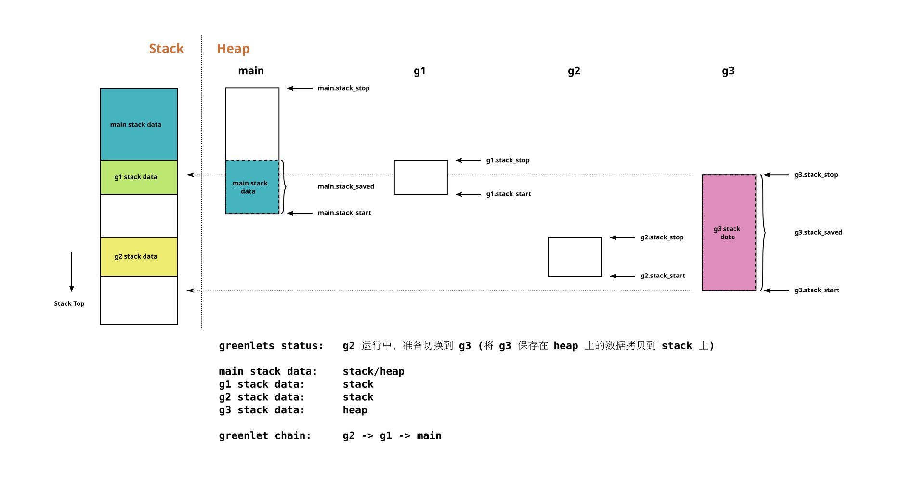
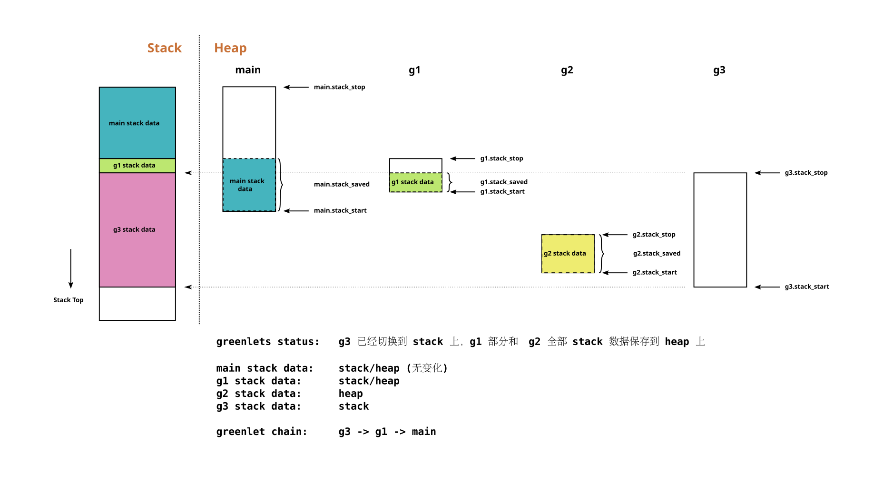

Greenlet 原理
2018-03-15
原理
我们知道，操作系统会给每一个线程分配一个独立的堆栈，它们各自独立运作，记录着该线程的各类运行状态：如函数本地变量，函数返回地址，寄存器状态等等各种上下文；从这个角度看，堆栈几乎就等价于线程
那么假如想要在用户态实现轻量级的类线程，就同样需要给它们分配独立堆栈，并提供方法在它们之间切换
Greenlet 就是 cpython 上的一种轻量级线程（协程）的实现，因为 cpython 是用 c 实现的，所以这就要求 Greenlet 的实现要跟 c 那一套保持一致，要让协程里运行的代码感觉自己跑在一个真正的 c 堆栈上
Greenlet 的做法是这样的：当一个 greenlet 运行时，它的堆栈区间数据将会完整地恢复放在 c 堆栈上，让它“原生态”地执行；若它被挂起，则有可能其部分或全部堆栈区间的数据会被拷贝到堆上保存；这是因为所有同一个线程的 greenlets 共享同一个 c 堆栈的地址空间，它们的堆栈区间会有可能有交集重叠
我们主要关注 PyGreenlet 的这几个字段来讨论实现原理：
stack_stop: 该 greenlet 堆栈区间 底 部地址（旧数据方向）stack_start: 该 greenlet 堆栈区间 顶 部地址（新数据方向）stack_prev: greenlet 链表 指针，见下节说明stack_copy: 该 greenlet 堆栈区间在堆上的拷贝stack_saved: 该 greenlet 堆栈区间在堆上的拷贝的长度
greenlet 链表
如前所叙述，只有当前运行的 greenlet 是保证其堆栈区间完整地置于 c 堆栈上，其它挂起的 greenlets 的堆栈区间数据则是有可能部分或全部地拷贝到了堆上保存；
那么任意时刻，c 堆栈就会由多个 greenlets
的部分或全部堆栈区间组成（这些区间有可能是紧贴着的，也可能中间有空隙，但必定不能重叠），Greenlet
库维护一个 greenlet 链表来表达 c 堆栈上这些区间的前后关系，该链表就是由
stack_prev 串联而成的，例如
/*
current.stack_prev -> ... -> main.stack_prev -> null
*/链表头一定是当前运行的 greenlet，链表尾一定是 main/initial greenlet；这个链表只包含那些在 c 堆栈上有部分/全部堆栈区间的 greenlets，已经完全拷贝到堆上的那些 greenlets 不包含在这个链表中
greenlet 堆栈区间
说了那么久堆栈区间，一个 greenlet
是如何确定它的堆栈区间[stack_stop, stack_start]的呢？
stack_stop是在一个 greenlet 首次开始执行时确定的（main greenlet 除外）：它取一个外层函数的本地变量地址，为什么可以这样呢？因为外层函数的本地变量处于 c 堆栈上且一定比内层函数（该 greenlet 的入口函数）更靠近 c 堆栈底部，由它作为stack_stop肯定能包含该 greenlet 整个有效的堆栈地址区间；这个地址在该 greenlet 的整个生命周期都不会改变stack_start是在一个 greenlet 每次 将要交出控制权的时候确定的，因为该 greenlet 正在运行，所以stack_start就是当前 c 堆栈顶地址
大致切换过程
假设当前运行 greenlet 为 current , 准备切换到
target ，那么切换过程包括保存 greenlet
链表上各元素的堆栈区间以及恢复 target 堆栈区间
保存：无论
target是第一次执行还是恢复执行，都是可以知道target.stack_stop的（如前所叙述），也就知道 c 堆栈需要空出位置到哪里给它恢复了：遍历 greenlet 链表，将target.stack_stop将要覆盖到的 greenlets 的堆栈区间分别保存到各自 greenlet 的stack_copy/stack_saved中去恢复：第一次执行不需要恢复，直接执行即可；恢复执行的话，则把拷贝到堆上的数据恢复到 c 堆栈上，然后把
target放入 greenlet 链表表头，设置target.stack_prev维护 greenlet 链表
例子
来两张图例
切换前：

切换后：

注释
最后还是贴一下代码里的注释，这个是最权威的说明了
/*
A PyGreenlet is a range of C stack addresses that must be
saved and restored in such a way that the full range of the
stack contains valid data when we switch to it.
Stack layout for a greenlet:
| ^^^ |
| older data |
| |
stack_stop . |_______________|
. | |
. | greenlet data |
. | in stack |
. * |_______________| . . _____________ stack_copy + stack_saved
. | | | |
. | data | |greenlet data|
. | unrelated | | saved |
. | to | | in heap |
stack_start . | this | . . |_____________| stack_copy
| greenlet |
| |
| newer data |
| vvv |
Note that a greenlet's stack data is typically partly at its correct
place in the stack, and partly saved away in the heap, but always in
the above configuration: two blocks, the more recent one in the heap
and the older one still in the stack (either block may be empty).
Greenlets are chained: each points to the previous greenlet, which is
the one that owns the data currently in the C stack above my
stack_stop. The currently running greenlet is the first element of
this chain. The main (initial) greenlet is the last one. Greenlets
whose stack is entirely in the heap can be skipped from the chain.
The chain is not related to execution order, but only to the order
in which bits of C stack happen to belong to greenlets at a particular
point in time.
The main greenlet doesn't have a stack_stop: it is responsible for the
complete rest of the C stack, and we don't know where it begins. We
use (char*) -1, the largest possible address.
States:
stack_stop == NULL && stack_start == NULL: did not start yet
stack_stop != NULL && stack_start == NULL: already finished
stack_stop != NULL && stack_start != NULL: active
The running greenlet's stack_start is undefined but not NULL.
*/